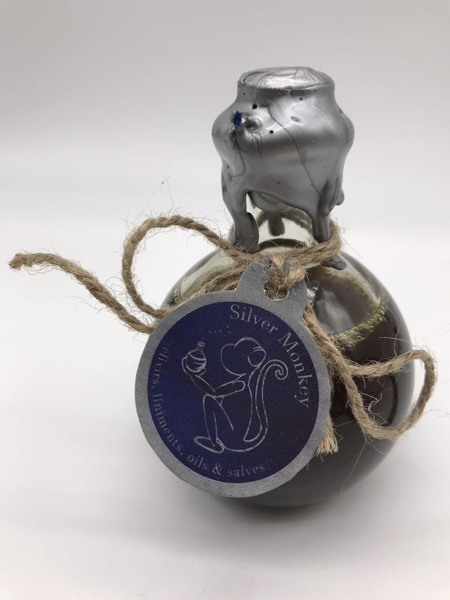
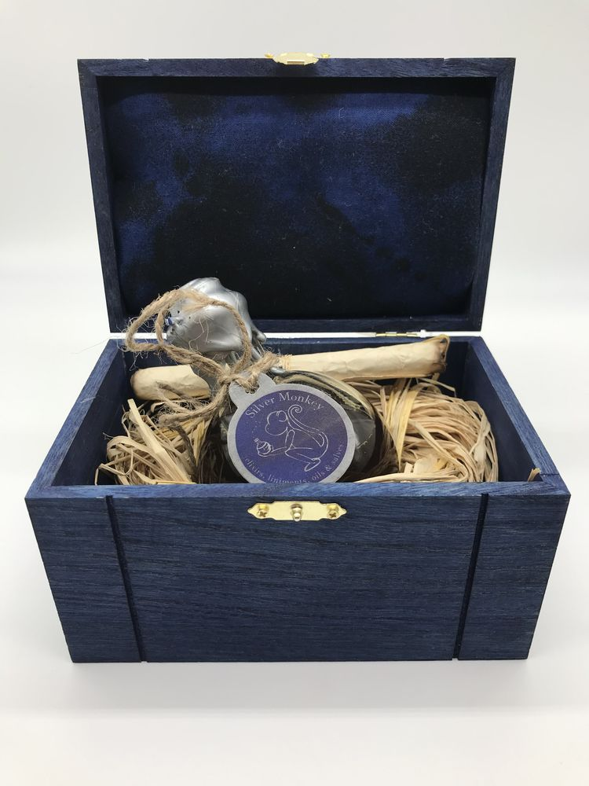
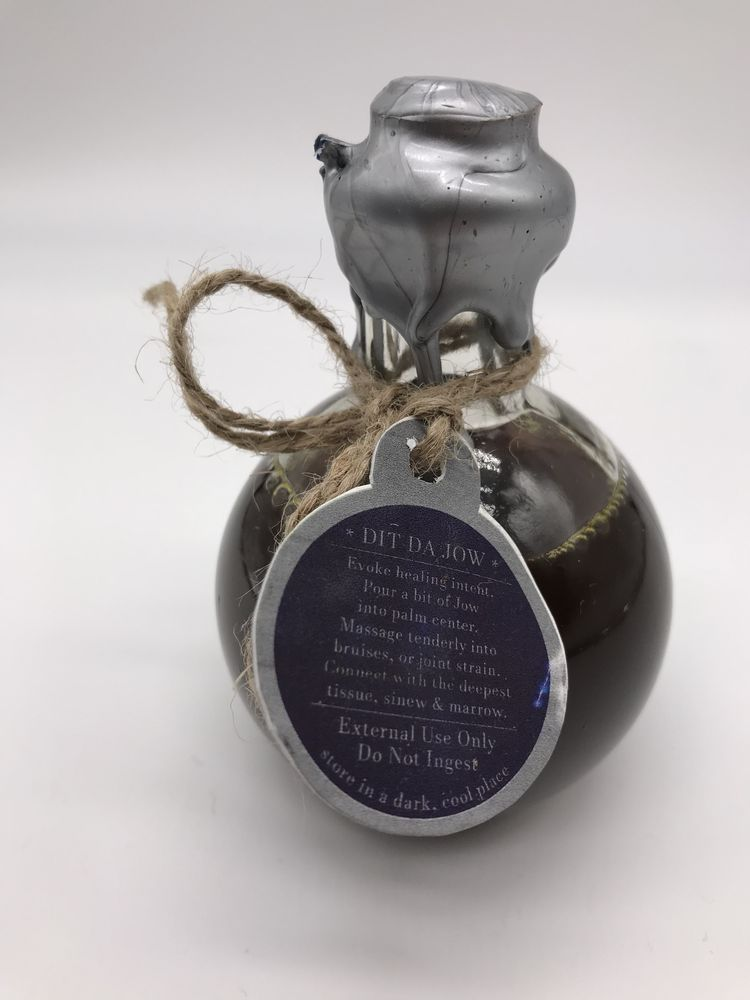
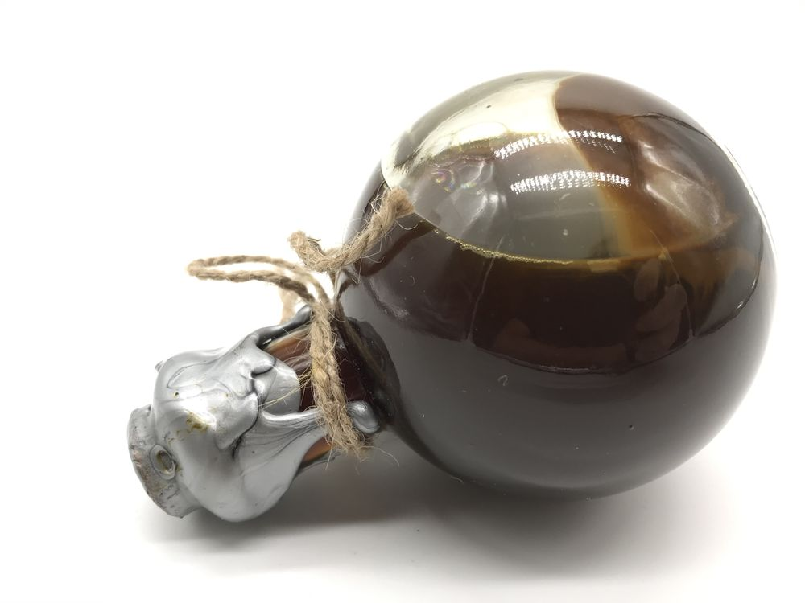

Dit Da Jow
$108




The traditional martial-arts liniment, made by hand in small batches. The formula has been handed down from teacher to student for generations. Twelve herbs, among them frankincense, myrrh, cinnamon, peony root and saffron, steeped in 80-proof vodka.
Practitioners have long worked Jow into the hands and body during Iron Palm and body conditioning, and after hard training.
Sealed in silver wax and presented in a blue wooden box with a scroll.
For external use only. Do not ingest. Keep away from children. Store in a cool, dark place. Contains alcohol: flammable.